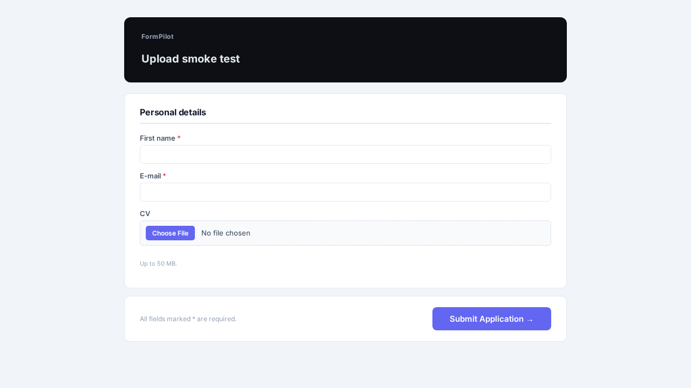
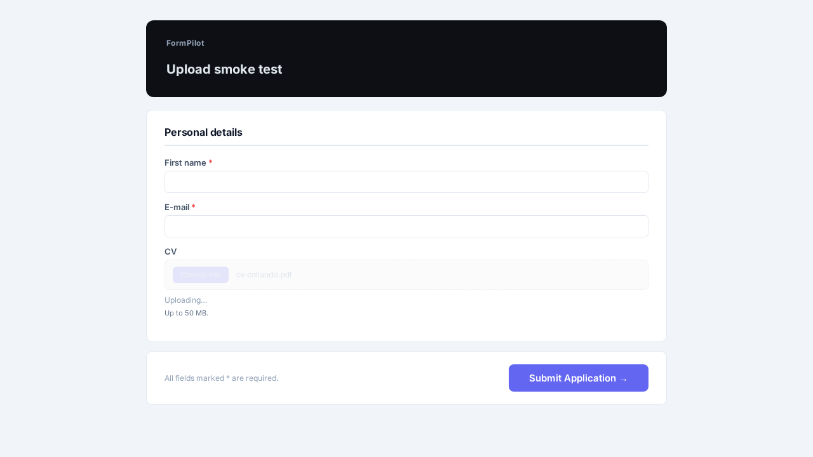
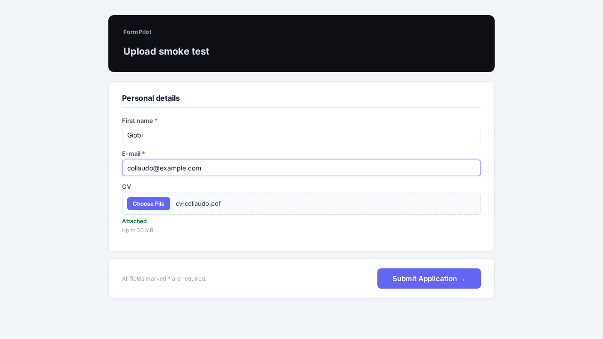
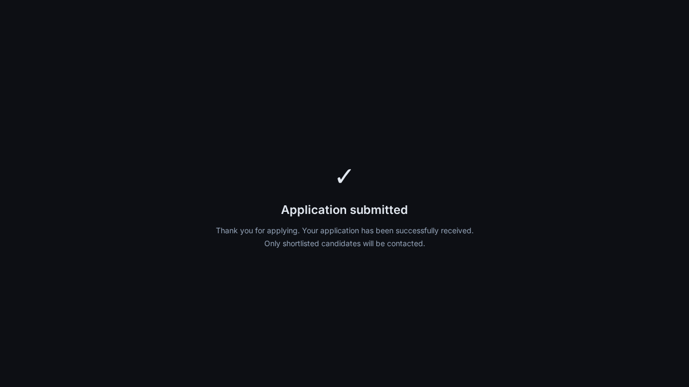
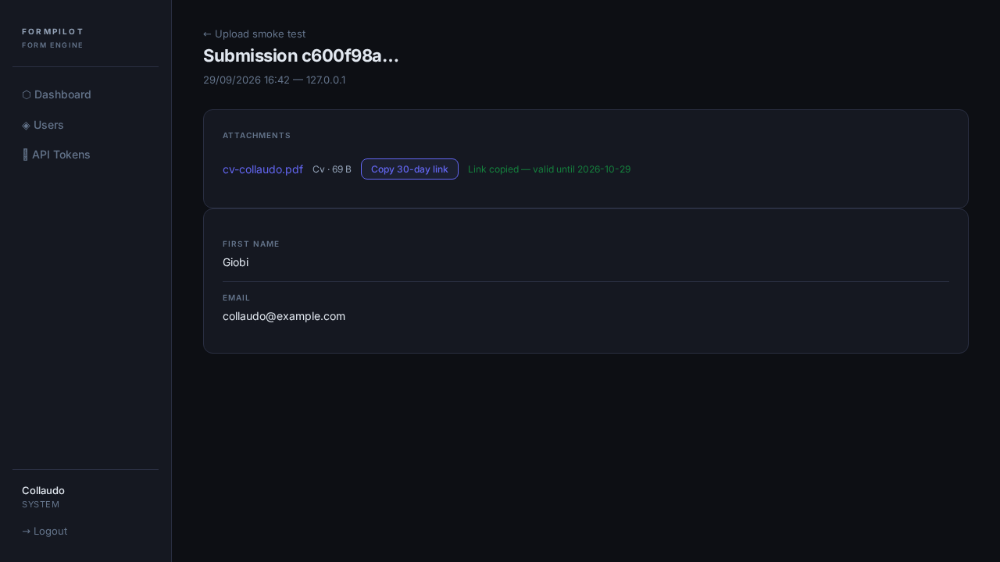

Un candidato può allegare il curriculum al modulo, il documento finisce nell'archivio dell'azienda e chi legge le candidature può aprirlo o girarlo a un cliente con un collegamento che dura un mese. Provato con un browser vero, non solo a tavolino. Resta da accendere sul sito pubblico: qui è stato collaudato sull'ambiente di prova.
Il campo per il documento compare insieme agli altri dati della persona. Accanto al bottone è scritto cosa si può caricare e quanto può pesare al massimo.

Scegliendo il file, la scritta restava su «Uploading…» e non succedeva più niente. Il modulo sembrava sano visto da fuori — la pagina rispondeva correttamente — ma nel browser il meccanismo si fermava alla prima istruzione. È il tipo di difetto che si vede solo aprendo davvero la pagina con un browser, ed è il motivo per cui questo collaudo si fa così.

Risolto il primo problema, il documento partiva ma veniva respinto: l'archivio non era ancora configurato per accettare invii diretti dal sito. Configurato, e il documento è passato al primo colpo.
Il file viaggia dal computer della persona direttamente all'archivio, senza passare dal sito: il sito non ne conserva copia e non c'è un limite di peso imposto dal server. Quando è arrivato, compare la conferma verde.

All'invio, il sistema va a rileggere il documento nell'archivio per accertarsi che ci sia davvero e che corrisponda a quello annunciato — non si fida di quello che dichiara il browser. Solo allora lo lega alla candidatura.

Nella scheda della candidatura compaiono gli allegati, con nome e peso. Il nome è cliccabile e apre il documento. Il bottone accanto crea un collegamento da incollare in una mail a un cliente: dura trenta giorni e non richiede di entrare nel sistema.

Quanto sopra è stato collaudato sull'ambiente di prova. Per accenderlo sul sito pubblico mancano tre decisioni, elencate nel dettaglio tecnico: mettere in funzione la nuova versione, aggiungere il campo al modulo di Fairtrade Belgium, e scrivere nell'informativa che i documenti allegati vengono conservati senza scadenza.
| Progetto | formpilot, branch generations |
|---|---|
| Produzione | forms.grworktech.com su generations (135.181.144.5), /home/web/formpilot — ferma a b07a703 |
| Sviluppo | efesto, /home/web/formpilot, stessa branch |
| Commit | dd3f624 · 985f161 · c9c9325 · 7921041 (pushati) |
| Storage | OVH, bucket grworktech-uploads (region de), CORS su forms.grworktech.com |
| Test | 95 verdi, 272 asserzioni. Gli 8 di ObjectVault girano contro il bucket vero, senza mock |
| Esito | HEALTHY — non rilasciato in produzione |
1. Nessun meta CSRF nella pagina pubblica. Il JS leggeva
document.querySelector('meta[name=csrf-token]').content su null e
moriva prima della prima richiesta. HTML e API rispondevano 200 per tutto il tempo.
PAGEERROR: Cannot read properties of null (reading 'content') STATUS TEXT: "Uploading…" HAS csrf meta: 0
Corretto leggendo il token dall'input _token del form, con il meta come ripiego.
2. Nessuna regola CORS sul bucket. Il PUT firmato moriva solo nel browser.
Access to fetch at 'https://grworktech-uploads.s3.de.io.cloud.ovh.net/files/…' from origin 'http://127.0.0.1:8899' has been blocked by CORS policy: No 'Access-Control-Allow-Origin' header is present on the requested resource.
La skill /s3 ha guadagnato cors get|set e mb. Su OVH
il PUT nudo di creazione bucket è rifiutato senza LocationConstraint esplicito
nel body, anche se l'endpoint nomina già la regione.
Più due visivi che nessun test avrebbe visto: il foglio di stile del campo era scritto con colori da tema scuro su una pagina chiara (nome del file quasi invisibile), e un file da 69 byte veniva mostrato come «0 KB».
Il collegamento di condivisione non è una presigned URL. La firma versione 4 rifiuta qualunque scadenza oltre una settimana, e ne servivano trenta giorni. Il link punta quindi all'applicazione, firmato da Laravel, e la URL del bucket nasce al click. Viene generato su richiesta e non stampato in pagina: una credenziale visibile a ogni apertura esce da uno screenshot.
Il tetto viene registrato sulla riga. Risolvere la policy solo al momento
della conferma permetteva a una modifica di configurazione fatta nel frattempo di allargare
un permesso già concesso. La verifica ora usa min(promesso, corrente).
Un allegato obbligatorio blocca solo se manca del tutto. Se il documento è stato offerto ma non si riesce a confermarlo, la candidatura passa comunque senza allegato: chi ha scritto tre risposte lunghe non deve perderle per un intoppo dell'archivio.
Un modulo senza allegati non emette né foglio di stile né script, quindi i due moduli CEFTA in produzione rendono esattamente quello che rendevano prima.
| Deploy | Codice pushato ma non rilasciato. Servono il blocco UPLOADS_S3_* nel .env di generations e php artisan migrate |
|---|---|
| Utente S3 ristretto | user-XKFj7F3h5VJ2 è oggi l'unica identità S3 del tenant e apre ogni bucket, backup compresi. Per crearne uno stretto serve l'API del manager OVH (application key + secret + consumer key), assente da .env |
| Antivirus | Nessuna scansione, con zip in whitelist. I recruiter aprono questi file e li inoltrano ai clienti |
| Informativa | Un modulo con allegati deve dichiarare che i documenti restano senza scadenza |
| Campo su Fairtrade | Da aggiungere alla sezione «Personal details», e da decidere se obbligatorio |
| Dipendenze | composer segnala 40 advisory su 12 pacchetti — preesistente, non introdotto qui |